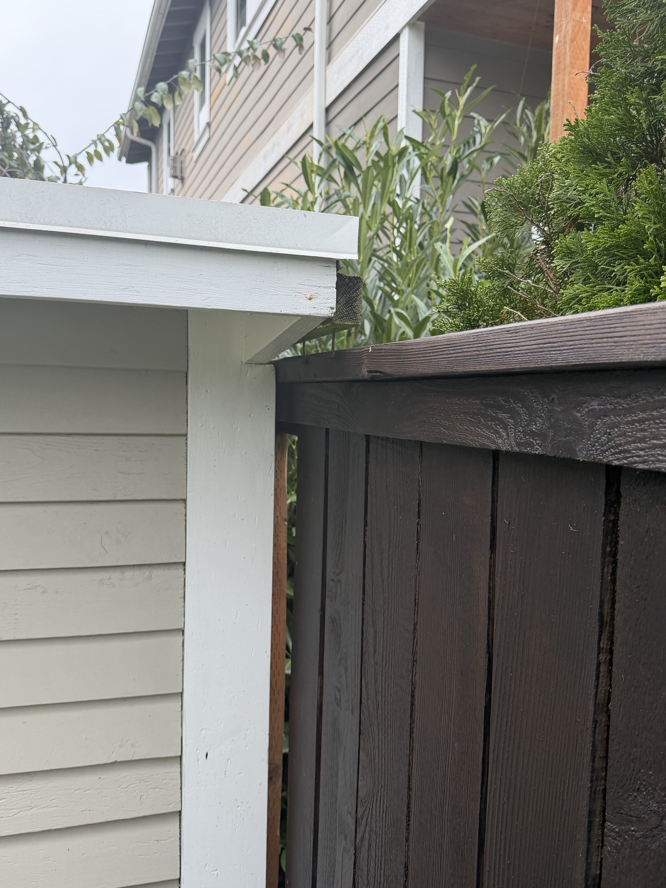
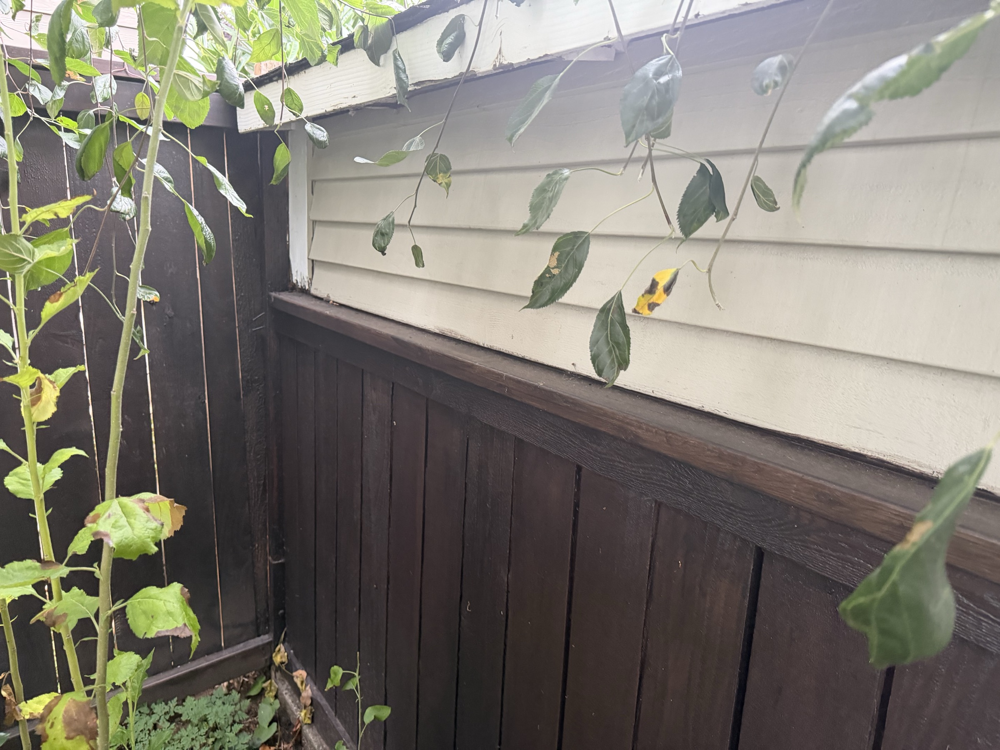
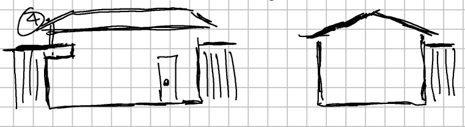
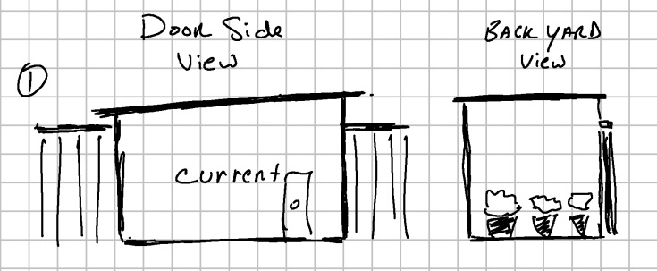
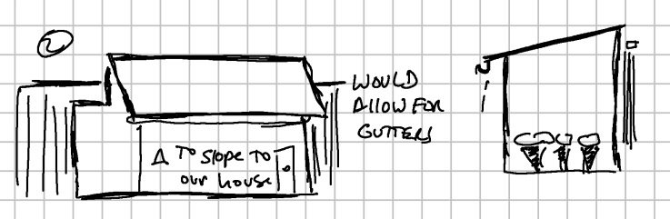
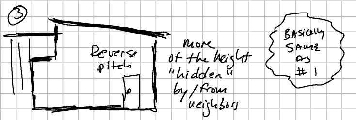
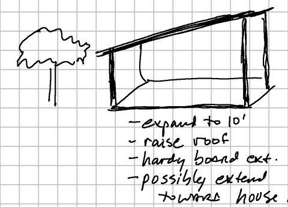
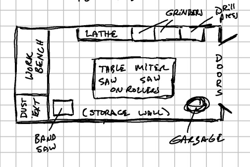
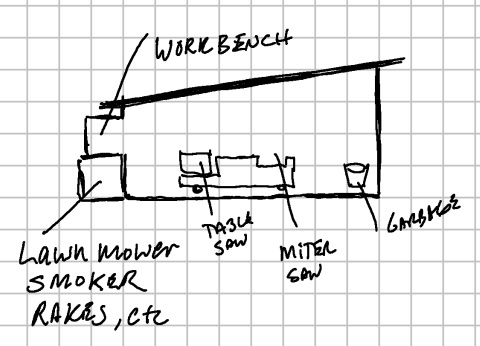
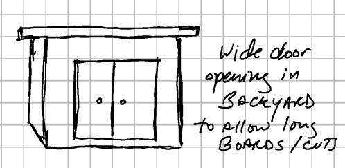

What I'm working with. It's not great. I'm going to be honest about that.
The shed was here when we bought the house. I have no idea exactly how old it is, but based on its construction and general vibe it has been around for a while — long enough that nobody involved in its original build is likely to feel any particular attachment to it. It measures roughly 7.5 feet by 8 feet, with a ceiling height that starts at just over 6 feet on the low side and climbs to about 7 feet at the peak. On a generous day, that's about 60 square feet of floor space.
Currently, the shed contains: the lawn mower, the smoker, a fair amount of leftover wood from earlier projects, and — this is real — a door of unknown origin. I genuinely cannot tell you where that door came from or what it was once attached to. It has simply always been in there, and it will continue to be in there until demolition day, at which point I will figure out what to do with it.


The shed has no installed power — I run an extension cord. It has no windows, meaning the only light inside is whatever a work lamp can manage. It has no insulation. And it has enough gaps in the structure that it provides meaningful shelter to insects, rodents, and — on one memorable occasion — something that I have chosen to not think too hard about. What it does not provide, in any meaningful sense, is a comfortable or practical working environment.
In Seattle, where it rains approximately forever, the outdoor-adjacent nature of the current setup means I frequently find myself sitting in the backyard hoping the weather cooperates while I try to work on something. This is not ideal. To be clear: I have gotten genuinely good work done out there. But I have also lost evenings to rain, gotten tools damp that I shouldn't have, and spent more time managing the environment than actually working in it.


"179 degrees away from an ideal workshop" might be overselling it. The structure stands. The door latches. Beyond that, we're working on a canvas that truly has nowhere to go but up.
At some point "I'll deal with it eventually" becomes "okay, now."
I've been doing tool restoration work — and increasingly, other woodworking projects — out of that shed for long enough that the limitations have stopped being inconveniences and started being a genuine barrier. When you're doing metalwork that produces fine particles and dust, ventilation isn't optional. When you're refinishing tool handles and applying oils and finishes, temperature matters. When you're using power tools at 9pm, not having installed lights is a real problem.
The neighbors have been consulted — important step, given the close quarters of Seattle backyards — and they're supportive. I've been mentally sketching layouts for a while. The question isn't whether to do it anymore. The question is how to do it well, and what "well" looks like given the constraints.
So I'm doing this in public. Partly because I think the process is interesting, partly because I have no idea what I'm doing on the construction side and genuinely welcome input, and partly because the Ko-fi button in the corner of this site exists for exactly this purpose — if you've gotten value from these write-ups and want to put a board or a nail toward the new shop, I'm grateful for it.
Maximum footprint. Hard limits. Non-negotiable geometry.
This is a Seattle backyard, not a farm. The space I'm working with is constrained on all sides — by the fence line, by the neighbor's property, by the house itself, and by the other things that need to live in the backyard (the patio, the garden beds, a functional path from the gate to the back door). After measuring carefully and being honest about what can realistically go where, here's what I'm looking at:
- Depth 9 feet is realistic. 10 feet is the absolute maximum — a true stretch that requires everything to align perfectly. There is no scenario where it's 11 feet.
- Width 10 feet is comfortable. 14 feet is the theoretical ceiling — that number requires me to reconsider how some other parts of the yard are organized, which is possible but not without tradeoffs.
- Height The current shed is low. The new build can go higher — full standing height throughout, plus enough headroom for storage loft potential if the design supports it.
- Permitting Seattle has clear rules on accessory structures — size, setbacks, and whether a permit is required. I'm looking into this carefully before a single board goes up.
The working assumption for planning purposes is a 9' × 10' build — approximately 90 square feet, which is a 50% increase over what exists now. That's enough to change the game meaningfully. If the 10' × 14' scenario becomes viable, it changes the layout options significantly, but 9' × 10' is what I'm planning around.
What a real workshop actually needs. No compromises this time.
I've spent enough time in the current shed to know exactly what I want the new one to do. Some of these are non-negotiable. Some are ambitious. All of them are on the list.
- Electrical — 110/120V Standard power for lighting, chargers, the bench grinder, the random orbital sander, and basically everything else. A real circuit, not an extension cord run through the door gap.
- Electrical — 220/240V Future-proofing for a table saw, bandsaw, or other stationary machines that warrant it. Running 220V now costs nearly the same as running it later, plus you don't have to tear into the walls twice.
- Air Filtration A ceiling-mounted ambient air filter running during and after work sessions. Metalwork and woodworking both produce fine particles that you really do not want to be breathing for years.
- Dust Collection A shop vac handles incidental cleanup, but a dedicated dust collector — even a compact one — makes a real difference when you're running sanders, a planer, or a router for extended periods.
- Natural Light At minimum, one window — ideally two. Natural light is better for color accuracy when finishing work, and it makes a small space feel dramatically less like a closet.
- Critter-Proof Construction Proper framing, no gap-prone boards, metal flashing at the base, hardware cloth over any vents. The current shed has been kind to its wildlife tenants. The new one will not be.
- Security A quality deadbolt, reinforced door jamb, and probably a hasp for an additional padlock. The tools in that shed represent a meaningful investment. I'd like them to stay put.
- Proper Tool Storage Wall-mounted tool holders, French cleats, dedicated cabinet space for hand tools. Not just "a shelf" — an actual layout that makes every tool findable in under 10 seconds.
- Workbench A real, heavy, properly-mounted bench — ideally built into the design rather than sitting in the middle of the floor. Leg vise or end vise. Probably both, eventually.
- Insulation & Climate Seattle winters are mild but damp. Even basic wall insulation keeps the space usable year-round and protects against humidity damage to tools. A small electric heater becomes significantly more effective in an insulated box.
Three roof designs. Two floor plans. One wide door. Working it out with a Kindle Scribe.
These are rough sketches — emphasis on rough — done on a Kindle Scribe while thinking out loud. They're not architectural drawings. They're an attempt to get the options out of my head and into a visible form, which is a useful thing to do before committing to anything. I'm sharing them here because this is a public project and honest process documentation matters more than polished presentation.
Roof Design Options
Three approaches, all working within the same basic footprint. The roof geometry affects headroom, drainage, neighbor sightlines, gutter viability, and how the structure reads from the backyard — so it's worth thinking through before framing begins.


Flat roof like it is currently, with the high side at either end lengthwise — just taller, wider, and better-built.

Flat roof but angled on the narrower dimension, with the high side either close to the main house or up on the fence line.

Same as Option 2 but with the roof angled in the other direction — high side on the opposite end.
Expansion Concept
One option that came up early: rather than a complete teardown and rebuild, expand and upgrade the existing structure — push it out to 10 feet, raise the roofline, add HardiBoard siding for low-maintenance durability, and potentially extend the footprint slightly toward the house. Less dramatic than a full rebuild, but would preserve whatever is still structurally sound in the current shed.

Floor Plan Options
Two floor plan sketches — one aspirational, one pragmatic. The honest answer is probably somewhere between them, shaped by whatever dimensions the final build ends up being.

Workbench on the left wall. Lathe along the back. Grinders and drill press in the back-right corner. Table saw and miter saw (both on rollers) in the center — movable for big cuts. Band saw and dust extraction at bottom-left. Storage wall runs the bottom. Door on the right.

Workbench along the back wall. The lawn mower, smoker, and rakes still have a dedicated zone on the left — because they need to live somewhere. Table saw and miter saw in the center. This is closer to what day one actually looks like.
The Wide Door Question
One specific feature worth calling out: the idea of a wide double door on the backyard-facing side specifically to allow long boards and full-sheet cuts. A standard 32" or 36" door limits your ability to bring 8-foot stock or 4×8 sheet goods through without a fight. A wider opening — or a pair of doors — solves that. It's not complicated; it just has to be designed in from the start rather than retrofitted.

Maximizing 90 square feet is an interesting problem. Let's talk about it.
The single most important principle in a small shop layout is that every inch has to earn its place. In a 9' × 10' space, furniture placement, workflow direction, and storage strategy are all interconnected — you can't just put things where they fit and hope for the best.
Some of the things I'm working through: whether a linear layout (bench along one long wall, machines along the other) makes more sense than a U-shape. How to handle the floor — concrete for easy cleanup, or wood for comfort during long sessions? Where the door goes, since its swing direction determines how much usable wall space I have on either side. Whether a small loft for material storage is worth the headroom sacrifice.
In a space this size, the difference between a good layout and a frustrating one isn't measured in feet — it's measured in inches. The door swing, the bench height, where the power outlets are: all of it compounds over thousands of hours of use.
I'm also thinking about the exterior. The current shed is painted white with a dark door — a combination that actually looks pretty good against the dark fence. Whatever replaces it should be at least as considered in terms of how it fits the yard. This isn't just a utilitarian structure; it's something I'll be looking at every day for years.
This is genuinely an area where I'd love input from people who've done it. If you've built or designed a small shop, or have opinions on layout, flooring, the 110 vs. 220 question, or anything else — the comments are open below. I mean it.
Not unlimited. Definitely not zero. Somewhere in between, trying to be smart about it.
I'm not going to pretend this is a cheap project. A well-built 9' × 10' structure with proper framing, decent siding, a real roof, insulation, electrical (including 220V service), windows, and a finished interior is a meaningful investment — especially in Seattle, where materials costs tend to run high and licensed electrical work isn't inexpensive.
The goal is to spend the money where it matters most and cut corners only where it genuinely doesn't. Electrical isn't a place to cut corners — both for safety reasons and because you only want to run conduit once. Framing isn't a place to cut corners. The workbench surface, on the other hand? A torsion box benchtop can be built for very little and will outlast a cheap purchased alternative by decades.
The Ko-fi link on this page is real. If the write-ups here have been useful to you and you want to contribute something toward the build — a box of screws, a two-by-four, an afternoon of electrical labor — I'm grateful for it. Every contribution is noted, and I'll keep the progress log below updated as things move forward.
Want to put a board toward the new shop?
Ko-fi contributions go directly toward materials, electrical work, and the other real costs of turning a decrepit shed into a functioning workshop. No subscription, no pressure — just a button if you want to use it.
🪚 Support the Shed UpgradeUpdates as they happen. In order. With dates.
This section will grow as the project moves forward. I'll note meaningful milestones — design decisions made, materials acquired, work completed — along with anything that didn't go as planned. The honest version, not the cleaned-up version.
The project is officially in the planning stage. The neighbors have signed off. The current shed has been documented in photos (see above). The wishlist is written. The budget is being scoped. Nothing has been built yet, nothing has been torn down yet, but the intention is now public — which has a way of making things feel more real.
If you have thoughts on layout, materials, electrical approach, or anything else — the comments section below is open. I'm particularly interested in hearing from people who've done something similar in a tight urban lot.
Have thoughts? I want to hear them.
Layout ideas, electrical opinions, things you'd do differently, mistakes I'm about to make — all welcome. No account needed.